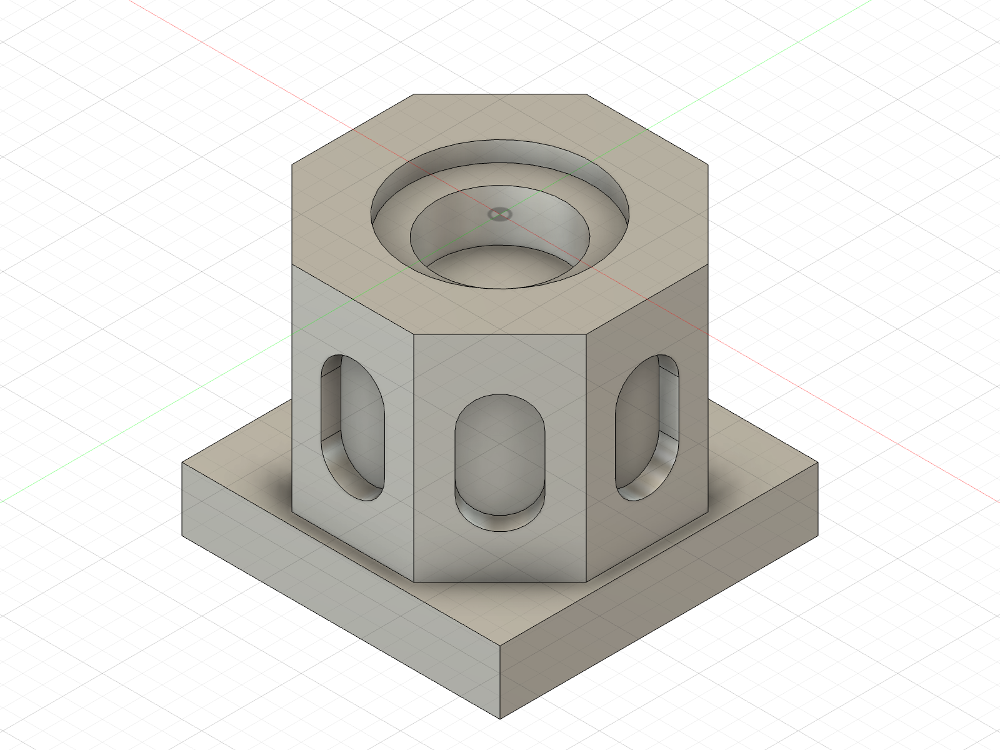

Before quoting the job, the estimator has to answer three questions with the machines and tooling actually on the floor.
Check the part against available machines, tools, stock and fixtures.
Choose the operations and toolpaths, then simulate the cut.
Estimate machining time to judge whether the job is worth taking.
Shared the demo, the pinned commit and our W&B project with ARIA. Completed advisory review.
We promote a learned rule globally before showing it helps another part.
Next: unseen-part evaluation before promotion. Already run: a paired replay on six retained cases.
114 seconds of real Fusion recordings and recorded learning results.

Inset: current stage CAD. Film: earlier UMC08 campaign plus cage and clevis. Separate generated targets.
The check written from Part B's failure later rejected a bad candidate for Part C in 51 milliseconds, before any simulation was spent on it.
Fusion estimated machining time · seconds · zero baseline
1614.397 → 1515.203 seconds. Four fresh verification passes in the recovery run. Stop when the next plan ties the incumbent.
99.2 seconds less estimated machining time.
One T1 Ø12.7 mm cutter.
Haas UMC750.
Indexed 3+2 machining.
Within-part optimization across a prepared run and recovery; the learned files stayed unchanged during this run.
B’s cutter enters a finished side of a pre-sized blank. The learned check later rejects C’s candidate before simulation.
# Actual persisted decision, abridged
side = side_overlap(x, y, z,
radius, flute, scope)
if side is not None:
issues.append(...)
Applicability: the recorded 3-axis fixture, G54 frame, post, and pre-sized-blank contract. Endpoint check; Fusion still verifies the repaired plan.
Inspect the saved check ↗C’s rejected candidate never reaches simulation.
Historical replay, with the same cases for both versions.
Open paired Weave evaluation ↗−45.2%
384.860 → 211.037 s.
Inspect ramp motion separately from cutting feed. Compare with the tool’s permitted preset.
Guidance saved; B’s first plan used the applicable ramp-feed preset.
−7.2%
228.182 → 211.850 s.
1 → 2 mm maximum ramp Z stepdown, with the same 2° angle and feeds.
Guidance saved; D used the ramp-planning approach.
−27.8 s
1 → 0.2 mm ramp clearance.
Four top holes: −11.65 s.
Four side pockets: −16.18 s.
Reduce clearance only where prior stock removal supports it.
Saved in cad_cam.md ↗. Case-specific ideas; each revised CAM plan goes through fresh verification.
Retained verified plan: 2357.727 s.
Agent-generated CAM, manually nominated for this final retest.
944.090 → 908.966 s · 3.72% lower.
Autonomous within-part CAM improvement.
Each clip: 12 seconds of machining motion → 6 seconds of the finished stock. Indexed 3+2, one cutter.
Generates CAD and CAM, repairs failures, writes the checks and the speed instructions.
Runs the machining simulation and compares finished stock against the accepted CAD.
Traces every attempt: input, feedback, revision, and which lesson version was active.
Manufacturing truth stays with the simulator. Weave records evidence; it does not gate the loop.